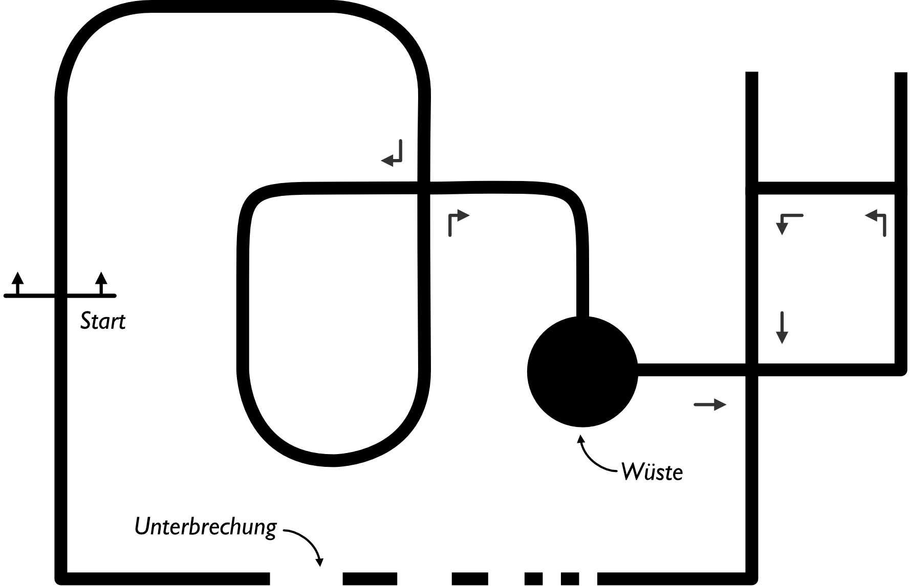

Folgen einer Linie mit Kreuzungen
Das Folgen einer Linie mit Kreuzungen, Unterbrechungen oder Ähnlichem erhöht die Komplexität des Linienfolgers.
Im Folgenden sind lose ein paar Anregungen zum Erkennen einer Kreuzung oder zum geschicketen Reagieren auf Kreuzungen aufgeführt. Es handelt sich hier nicht um eine vollständige Lösung des Problem, sondern vielmehr um mögliche Ansätze für eigene Realisierungen.
Erkennen von Kreuzungen

enum KreuzungsTypen {GERADE, LINKS, RECHTS, LINKSRECHTS, LINKSGERADE, RECHTSGERADE, KREUZUNG, WUESTE, UNTERBRECHUNG};
enum KreuzungsTypen bestimmeKreuzung(int pThreshold) {
int delayIntersection = 200; // Zeit, die der Roboter fährt, um anchließend zu prüfen, wie die Strecke weitergeht
lineSensors.readCalibrated(lineSensorValues); // Sensorwerte aktualisieren
bool linksSensor = lineSensorValues[0] > pThreshold;
bool mitteSensor = lineSensorValues[2] > pThreshold;
bool rechtsSensor = lineSensorValues[4] > pThreshold;
if (!linksSensor && !rechtsSensor && !mitteSensor) {
return UNTERBROCHEN; // Rückgabe Werte der Funktion: UNTERBROCHEN
}
else if(!linksSensor && !rechtsSensor){
return GERADE; //Rückgabe Werte der Funktion: GERADE
}
else {
// Linker und/oder rechter Sensor haben eine Linie erkannt.
// Ein Stück weiterfahren und überprüfen, ob es auch geradeaus geht.
motors.setSpeeds(speed,speed);
delay(delayIntersection);
motors.setSpeeds(0,0); // evtl. überflüssig
// Sensorwerte müssen neu eingelesen werden, um zu überprüfen wie es weitergeht ...
lineSensors.readCalibrated(lineSensorValues);
/*
Weitere if-else Abfragen mit den *neuen* Sensorwerten zum Erkennen aller Kreuzungstypen
*/
}
}
Einer Linie mit Kreuzungen folgen

// Aufzählungstyp mit allen möglichen "Kreuzungstypen"
enum KreuzungsTypen {GERADE, LINKS, RECHTS, LINKSRECHTS, LINKSGERADE, RECHTSGERADE, KREUZUNG, WUESTE, UNTERBRECHUNG};
KreuzungsTypen kreuzungsTyp;
enum KreuzungsAktionen {LINKS_DREHEN, RECHTS_DREHEN, WEITER, WUESTE_FAHREN};
// Array mit den durchzuführenden Aktionen
KreuzungsAktionen kreuzungsAktion[] =
{RECHTS_DREHEN, RECHTS_DREHEN, WUESTE_FAHREN, WEITER, LINKS_DREHEN /* weitere Aktionen*/ };
int kreuzungsNummer = 0; // wird als Index für kreuzungsAktion[] genutzt
int anzahlKreuzungen = 5; // an die Aktionen anpassen
void loop() {
KreuzungsTypen kTyp = bestimmeKreuzungstyp();
if (kTyp == GERADE ) {
folgeLinie(); // keine Kreuzung
}
else { // Aktion durchführen, wenn keine GERADE erkannt wurde
abbiegen(kreuzungsAktion[kreuzungsNummer]);
kreuzungsNummer++;
if (intersectionNumber >= anzahlKreuzungen) {
intersectionNumber = 0; // neue Runde ...
}
}
}
Hilfsfunktion zum Debuggen
Die Hilfsfunktion showIntersectionReadings() gibt auf dem Display zuerst die Sensorwerte des ganz linken und ganz rechten Sensors aus. Nach vier Sekunden wird die Anzeige geändert, und die Werte des mittleren Sensors und die Position der Linie wird ausgegeben.
Verwenden Sie die Funktion zum Testen, ob der Roboter an den Kreuzungen auch wirklich das erkennt, was sie vermuten. Nutzen Sie die, oder eine ähnliche Funktion, lieber einmal zu viel als zu wenig. Es kann Ihnen viel Mühe und Kopfzerbrechen ersparen.
void showIntersectionReadings() {
char msg1[8];
char msg2[8];
delay(1000);
int lPosition = lineSensors.readLine(lineSensorValues); // aktualisiere der Sensorwertee
sprintf(msg1, "0: %4d", lineSensorValues[0]); // Sensor ganz links
lcd.gotoXY(0, 0); lcd.print(msg1);
sprintf(msg2, "4: %4d", lineSensorValues[4]); // Sensor ganz rechts
lcd.gotoXY(0, 1); lcd.print(msg2);
delay(4000);
sprintf(msg1, "2: %4d", lineSensorValues[2]); // Sensor mitte
lcd.gotoXY(0, 0); lcd.print(msg1);
sprintf(msg2, "Pos %4d", lPosition); // Positin der Linie
lcd.gotoXY(0, 1); lcd.print(msg2);
delay(4000);
lcd.clear();
}
Zum Ausgeben der Werte auf dem Display wird die Funktion sprintf() genutzt. Die Funktion erlaubt es Text und Zahlenwerte nach bestimmten Regeln zu formatieren und ein eine neue Variable (hier den char-Array msg1[] oder msg2[] zu schreiben und anschließend mit lcd.print(msg1) auf dem LCD-Display auszugeben.
sprintf()
Das Prozentzeihen % markiert einen Platzhalter für Zahlenwerte, die formatiert werden sollen. So wird zum Beispiel mit %4d ein Integerwert ausgeben und nach links Platz für 4 Stellen bereitgestellt. Hat der Integerwert weniger als 4 Stellen, so wird an der Stelle ein Leerzeichen ausgegeben. Siehe auch hier.
int wert1 = 80;
sprintf(msg1, "Wert:%4d", wert1); //
// Ausgabe: 'Num: 80'
int wert1 = 1280;
sprintf(msg1, "Num:%4d", wert2);
// Ausgabe: 'Wert:2280'
Das LCD-Display des Zumo 32u4 hat pro Zeil nur 8 Zeichen. Also sollten nicht mehr als 8 Zeichen pro Zeile ausgegeben werden.